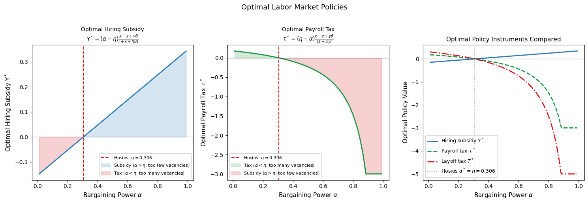
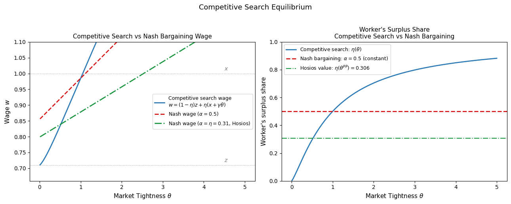

Efficiency and Competitive Search Equilibrium#
Introduction#
The search and matching models developed in previous notebooks characterize the decentralized equilibrium of the labor market — the outcome that emerges when workers and firms independently optimize given market conditions. A natural question follows: is this equilibrium efficient? Does the decentralized market maximize social welfare, or do the frictions that generate unemployment also generate misallocation?
The answer is not obvious. Search frictions create trading externalities: the probability that any agent finds a trading partner depends on the number of other agents searching in the same market. When a firm opens a vacancy, it makes it easier for unemployed workers to find jobs — a positive externality on workers — but harder for other firms to fill their vacancies — a negative externality on firms. These externalities are not priced by the Nash bargaining process, which takes place between a matched pair after they meet and therefore cannot internalize the effects of their wage agreement on agents still searching.
This lecture develops three interconnected topics:
The social planner’s problem: what allocation would a benevolent planner choose, subject to the same matching frictions as the decentralized economy?
The Hosios condition: the precise condition under which Nash bargaining internalizes the search externalities and delivers the efficient allocation.
Labor market policies: how hiring subsidies, payroll taxes, and layoff taxes can restore efficiency when the Hosios condition fails.
Competitive search equilibrium: a market structure, due to Moen (1997), in which the decentralized equilibrium is always efficient, without requiring the Hosios condition to hold.
Labor Market Policies#
Motivation#
When the Hosios condition fails — which is the generic case, since there is no reason why the structural parameters \(\alpha\) and \(\eta\) should coincide — the decentralized equilibrium is inefficient. Labor market policies can potentially correct for this inefficiency by modifying the incentives for vacancy creation and wage setting. We consider three instruments: a hiring subsidy, a payroll tax, and a layoff tax.
The Augmented Model#
We augment the benchmark model with three policy parameters:
Hiring subsidy \(\Upsilon > 0\): for every successful match, the firm receives a lump-sum payment \(\Upsilon\) from the government. This reduces the effective cost of filling a vacancy.
Payroll tax \(\tau \in (0,1)\): firms pay \((1+\tau)w\) for each employed worker, raising the marginal cost of labor.
Layoff tax \(T > 0\): firms pay a penalty \(T\) each time they destroy a match, raising the effective separation cost.
The Bellman equations for firms become:
Under free entry (\(J_v = 0\)), the value of a filled job is:
and the job creation condition for a given wage is:
Nash Bargained Wage with Policies#
The presence of policies changes the Nash bargaining outcome. The payroll tax increases the firm’s marginal cost of employing a worker by factor \((1+\tau)\), while the worker’s marginal benefit remains unity. This asymmetry shifts the sharing rule: the modified Nash problem yields:
so that the worker receives fraction \(\alpha/(1+\tau(1-\alpha))\) of the joint surplus and the firm receives \((1-\alpha)(1+\tau)/(1+\tau(1-\alpha))\). The Nash bargained wage is:
The effects of each policy on wages, holding tightness fixed, are:
Hiring subsidy \(\Upsilon\): lowers the wage by improving the firm’s bargaining position — the firm saves on search costs upon meeting the worker.
Layoff tax \(T\): lowers the wage by reducing the joint surplus — the firm’s share of the surplus must cover the expected future layoff penalty.
Payroll tax \(\tau\): reduces the slope of the wage curve, as the effective return to the firm from any wage increase falls.
Equilibrium Condition#
Substituting the Nash wage (13) into the job creation condition (12) yields the equilibrium condition with all three policies:
All three policies affect tightness qualitatively in the expected direction — subsidies raise \(\theta\), taxes reduce it — but their quantitative effects are moderated by the wage response: policies that reduce firm profitability also reduce wages through Nash bargaining, partially offsetting the demand effect.
Optimal Policy Instruments#
For each instrument in isolation, we can solve for the value that makes equilibrium (14) coincide with the planner’s allocation (5).
Optimal hiring subsidy (\(\Upsilon > 0\), \(T = \tau = 0\)):
A positive subsidy is warranted when \(\alpha > \eta\) — workers capture too large a share of the surplus, firms create too few vacancies, and the subsidy corrects for the underinvestment in job creation.
Optimal payroll tax (\(\tau > 0\), \(\Upsilon = T = 0\)):
A positive tax is warranted when \(\alpha < \eta\) — firms capture too large a share of the surplus, create too many vacancies, and the tax corrects for excessive job creation. When \(\alpha > \eta\), the optimal payroll tax is negative — a payroll subsidy.
Optimal layoff tax (\(T > 0\), \(\Upsilon = \tau = 0\)):
The layoff tax has the same qualitative properties as the payroll tax: it is positive when firms over-create vacancies (\(\alpha < \eta\)) and negative (a layoff subsidy) when firms under-create them (\(\alpha > \eta\)). However, the layoff tax is a less desirable instrument when job destruction is endogenous — it distorts the separation decision in addition to the vacancy creation decision, potentially introducing a new inefficiency while correcting the original one.
Numerical Illustration#

All three panels share the same zero-crossing point at \(\alpha = \eta(\theta^{PP})\) — the Hosios value — confirming that no policy intervention is needed when the Hosios condition holds. The hiring subsidy is positive (a true subsidy) when \(\alpha > \eta\) and negative (a tax on job creation) when \(\alpha < \eta\), while the payroll and layoff taxes have the opposite sign pattern. The magnitudes differ across instruments: the layoff tax requires a larger absolute value than the payroll tax to achieve the same correction, reflecting the fact that the layoff tax operates through the separation margin rather than the hiring margin.
Competitive Search Equilibrium#
Directed Search and Wage Posting#
The Hosios condition provides a necessary and sufficient condition for the Nash bargaining equilibrium to be efficient, but it requires a precise relationship between structural parameters that will generally fail to hold. Moen (1997) proposes an alternative market structure — competitive search equilibrium — in which the decentralized equilibrium is always efficient, without any restriction on parameters.
The key departure from the benchmark model is that wages are posted before matching takes place, rather than bargained after a meeting. This creates a fundamentally different strategic environment:
Firms post a wage \(w_i\) when opening a vacancy, committing to pay this wage to any worker they hire.
Workers observe posted wages and direct their search toward submarkets offering the highest expected income.
The labor market is segmented into submarkets, each defined by a posted wage \(w_i\) and an associated tightness \(\theta_i\).
This structure generates a powerful mechanism: by posting a higher wage, a firm attracts more workers and fills its vacancy faster, but at lower profit per match. The firm therefore faces a genuine trade-off between wage and hiring speed, and internalizes the effect of its wage choice on the arrival rate of workers — exactly the externality that Nash bargaining fails to price.
Workers’ Decision: The Participation Constraint#
Workers direct their search toward the submarket offering the highest expected income. Since all workers are identical, in equilibrium all active submarkets must yield the same expected utility \(W_u\). From the worker’s Bellman equations:
solving for \(rW_u^i\) in terms of \(w_i\) and \(\theta_i\):
Setting \(rW_u^i = rW_u\) for all active submarkets and solving for the relationship between \(w_i\) and \(\theta_i\) consistent with worker indifference:
This is the workers’ participation constraint: it defines the wage-tightness frontier along which workers are indifferent between submarkets. The frontier slopes downward: submarkets with higher wages have lower tightness (fewer workers per vacancy) because workers are willing to endure longer search for better-paying jobs. Submarkets offering wages below \(rW_u\) attract no workers and shut down.
Firms’ Decision: Optimal Wage Posting#
Firms choose a wage to maximize the value of opening a vacancy, taking the participation constraint (18) as given — they understand that their wage choice determines the arrival rate of workers:
With free entry and a fixed entry cost \(K\), the equilibrium requires \(J_v^i = K\) for all active firms.
Equilibrium and Efficiency#
Solving the firm’s constrained optimization problem yields the equilibrium job creation condition:
and the equilibrium posted wage:
Comparing equation (20) to the Nash bargained wage $w = \alpha(x+\gamma\theta)
(1-\alpha)z\(: the competitive search wage is exactly the Nash bargained wage evaluated at \)\alpha = \eta(\theta)$ — the Hosios condition. The competitive search equilibrium always delivers the efficient allocation, for any parameter values, because the wage posting mechanism endogenously generates the correct sharing rule.
Why Competitive Search is Always Efficient
In competitive search equilibrium, the firm’s optimal wage posting choice internalizes the congestion externality directly. By committing to a wage before search takes place, the firm accounts for how its wage affects the arrival rate of workers — and therefore the social cost of its vacancy creation decision. The equilibrium wage posting formula (20) is exactly the Nash bargained wage at the Hosios condition, so the decentralized equilibrium coincides with the planner’s allocation for any values of the underlying parameters.
The economic mechanism behind this result rests on two features working together:
Submarket segmentation: workers can freely move between submarkets, so firms that post unfavorable wages attract no workers. This mobility disciplines firms’ wage posting choices.
Pre-commitment: because wages are posted before search, the firm’s wage choice directly determines the probability of meeting a worker. The firm therefore cannot treat the arrival rate of workers as independent of its wage — it must internalize the link between wages and matching rates.
Numerical Illustration#

The left panel compares the competitive search wage rule to two Nash bargaining wage rules: the benchmark (\(\alpha = 0.5\)) and the Hosios Nash wage (\(\alpha = \eta(\theta^{PP})\)). The competitive search wage (blue) coincides with the Hosios Nash wage (green) at the equilibrium tightness \(\theta^{PP}\), confirming the efficiency result analytically. The right panel shows the worker’s surplus share under each rule: Nash bargaining delivers a constant share \(\alpha\) regardless of tightness, while competitive search delivers a share equal to \(\eta(\theta)\) — varying with tightness in exactly the way required by the Hosios condition. This is the sense in which competitive search endogenously generates the efficient sharing rule: the wage posting mechanism causes the worker’s share to track the matching elasticity, internalizing the congestion externality at every level of tightness.
Conclusion#
This notebook has developed the theory of efficiency in search economies and characterized the conditions under which decentralized markets maximize social welfare. The main results are as follows.
The social planner’s problem reveals that the constrained efficient allocation differs from the decentralized Nash bargaining equilibrium whenever \(\alpha_L \neq \eta_L(\theta^{PP})\). The planner’s job creation condition weights the surplus by \(1-\eta_L\) rather than \(1-\alpha_L\), reflecting the social cost of the congestion externalities on each side of the market.
The Hosios condition \(\alpha_L = \eta_L\) is the precise requirement for efficiency: it ensures that the worker’s bargaining share correctly prices the externalities. When the Hosios condition fails, unemployment is either inefficiently high (\(\alpha > \eta\), too few vacancies) or inefficiently low (\(\alpha < \eta\), too many vacancies). The condition has a welfare interpretation: it is also the bargaining power that maximizes the expected income of unemployed workers, highlighting the role of the unemployed as outsiders whose welfare is ignored in the Nash bargaining between insiders.
Labor market policies — hiring subsidies, payroll taxes, and layoff taxes — can restore efficiency when the Hosios condition fails. Each instrument has a precisely calibrated optimal value that equates the decentralized and planner’s allocations. The optimal instruments have opposite signs depending on whether the economy suffers from too much or too little vacancy creation.
Competitive search equilibrium provides a market structure that is always efficient, without requiring the Hosios condition to hold as a restriction on primitive parameters. By posting wages before search and allowing workers to direct their search toward preferred submarkets, firms internalize the congestion externality through their wage posting decision. The equilibrium wage is exactly the Nash bargained wage at the Hosios condition — not because parameters happen to satisfy it, but because the wage posting mechanism endogenously generates the correct sharing rule.